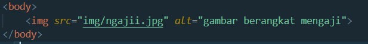
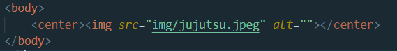

Untuk menampilkan gambar di html carannya yaitu dengan mengetik:
Ini adalah hasilnya:

Pada code tersebut terdapat atribut alt. Atribut alt berfungsi untuk memberi caption gambar apabila gambar gagal dimuat.
Contohnya kita salah mengetik di atribut source seperti:

Source seharusnya "ngaji.jpg", sehingga gambar akan gagal dimuat.
Kemudian hasilnya akan seperti ini:

Kita juga dapat menambahkan atribut "center" untuk meletakan gambar ke tengah.
Caranya yaitu:
